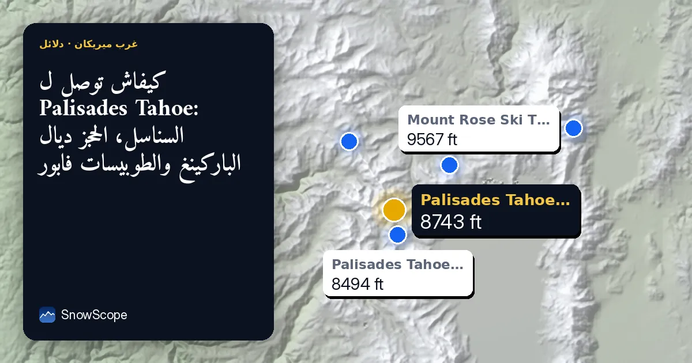
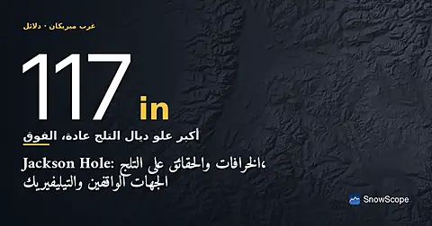
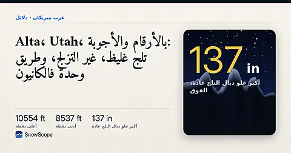

كيفاش توصل ل Palisades Tahoe: السناسل، الحجز ديال الباركينغ والطوبيسات فابور
Palisades Tahoe Olympic Valley، على الشاطئ الشمالي الغربي ديال Lake Tahoe، كتجذب الزلاجين من Reno و Sacramento و منطقة Bay Area. الرحلة ديالك ف الشتاء كتعتمد على حاجتين: قوانين تحكم السلاسل ديال كاليفورنيا ك تلج كيهبط، و حجزات البركينج اللي تطلبها المحطة ف الويك إندات مشغولة و الأعياد.
شوف توقعات التلج مباشرة ديال Palisades Tahoe Olympic Valley فالتطبيق ديال SnowScopeالعلو ديال التلج، التنبيهات والخريطة 3D، فابور.

ثلاث ساعات من أقرب مدينة مطار
Reno هي أقرب مدخل: تقريبا 42 ميل (68 كم) جنوب غرب. Sacramento كتوضع 96 ميل (154 كم) ل الغرب، و San Francisco 196 ميل (315 كم) بعيد أكتر. The Village at Palisades Tahoe كتوضع فين 1960 Olympic Valley Road؛ قاعدة Alpine Meadows عندها مدخل خاص فين Alpine Meadows Road. أكثر الشوفيرين كيمرو من Donner Summit، واش المرور كيبطيّ بزاف ف أيام الثلج.
وقت السفر من Reno عادة حوالي ثلاث ساعات ف الظروف اللي كاين، لكن التلج و مراقب تحكم السلاسل كيمكن تضاعف الوقت. روح بدري ف اليوم اللي كيتوقع ثلج و تفقد Caltrans QuickMap باش تشوف حالة الطريق و الإغلاقات و تحكم السلاسل قبلما تروح.

شنو معنى R-1 و R-2 و R-3 ك التلج كيهبط
Caltrans كتحط مستويات تحكم السلاسل على لافتات الطريق كالتلج كيوصل. R-0 معناها لا تحكم. R-1 كتطلب السلاسل على كل السيارات غير سيارات الركاب و الشاحنات الخفيفة اللي وزنها أقل من 6,000 جنيه اللي عندها إطارات ثلج على الأقل زوج من الحوايج اللي كتعطّي الحركة؛ تلك السيارات برا المحاولة كتوخا السلاسل فين السيارة. R-2 معناها السلاسل أو أدوات الجر على كل السيارات غير تلك اللي عندها حركة على الأربعة عجّال أو حركة على الكل و إطارات ثلج على الأربعة عجّال اللي خصها تعطيك أدوات فين السيارة. R-3 كتطلب السلاسل على كل سيارة، بلا استثناء؛ الطرق كثيرا كتسدّ قبل ما يكتبو R-3.
اللافتات و الموظفين ديال Caltrans أو CHP اللي عند نقطة المراقبة اللي تعطيك الكلمة الأخيرة. التقارير الراديو كيمكن تتأخر عن الظروف الحقيقية. ف أيام الثلج الكتير، الشاحنات كتوقفوا أو كتردهوم من المراقب، واش كيأخر المرور اللي وراهوم. جيب وقت زايد فين البرنامج ديالك ف أيام الثلج.
قبلما تروح: مراقبة الطريق و الوقت
Caltrans QuickMap هي المصدر الرسمي لتحكم السلاسل و الإغلاقات و الظروف اللي كاين دابا على SR-80 و طرق جبال أخرى. تفقدو قبلما تروح من دار ثم تفقدو من جديد من الطريق إذا السفر كاخد وقت أكتر من اللي كنتوقع. ف أيام الويك إند مشغولة ديال التلج الطري، الطابور ند نقطة المراقبة كيمكن يتمدد لميال بزاف، خصوصا إذا التلج كيبقى كيهبط.
روح بدري: ليس باش تنام براحة، لكن باش تتجنب وقوفك فين طابور بطيء أو تواجه إغلاق كيخليك محشور دابا لليل. إذا شفت R-2 أو أكتر موقود بدري، فكّر إذا اليوم غادي يستاهل الرحلة.
البركينج: حجز قبل أو استعمل الباصات فابور
حجزات البركينج كتكون إجبارية على الساتّ و الحد و كل الفترات ديال الأعياد. المحطة كتعطي كلا الحقّات فابور و الحقّات بالفلوس، لكن خصك تحجز قبل ما توصل. ف الويك إندات مشغولة بلا حجزة، ما غادي تحصل على حقّة.
البدائل فابور كاين. Tahoe Area Regional Transit (TART) كتسقّ باصات فابور كل يوم من Truckee و Tahoe City ل Olympic Valley. The Mountaineer، شاتل فابور على الطلب، كتربط أجزاء مختلفة ديال الواد. ف اليوم ديال ثلج كاين واش الرحلة كتكون مجهدة و البركينج كيكون مليح، الباص كيحلّ المشكلتين: تتجنب طابور نقطة المراقبة و فراغ البركينج.
أنماط التلج على طول الموسم
Palisades Tahoe كتوضع فين منطقة واش التلج كيكون معاود لكن كيتبدل من شهر لشهر. منتصف الجبل (7,470 قدم / 2,277 متر) كتشوف ذروة موسم معيّنة حوالي 80 بوصة (202 سم)، مع التلج على التربة حوالي 190 نهار ديال شتاء معيّن. نونبر عادة كتجيب التلج قليل على القاعدة لكن حتى 49 بوصة (126 سم) أعلى فين واحد ديال عشرة شتوات. دجنبر و يناير كتجيبو تراكم أكتر ثقيل، و مارس هو الشهر العميق بزاف.
الأسبوع الأحسن تاريخيا هو الأسبوع 10 (بداية مارس)، واش منتصف الجبل كتكون على عمق وسط حوالي 65 بوصة (163 سم) فين تسعة ديال عشرة شتوات. الشتاء اللي فات (2025–26) كوصل ل 65 بوصة (166 سم) على منتصف الجبل مع 120 يوم ثلج. في بداية الموسم، غطاء التلج كيمكن يكون رقيق و الأجزاء الصخرية كيمكن تبان؛ الصخور المدفونة تحت التلج الضحل هي خطر.
الأمان ضد الانهيارات ك تروح برا المحطة
إذا بغيت تزلّج أو تمشي براه المحطة، تفقد نشرة الانهيارات ديال منطقة Tahoe قبل. بوابة avalanche.org كتنشر نشرات يومية. حتى الرحلات القصيرة خارج البيست كتطلب كاشف انهيار و بروبة و رفش و معرفة باش تستعملهم. ما روحش وحدك، و ما روحش بلا ما تتفقد النشرة.
نصايح للي كيتزلجو
- تفقد Caltrans QuickMap و التوقعات ديال الجو قبل ما تروح من دار. ف أيام الثلج، روح بدري أو بقا فين الدار.
- جيب السلاسل حتى إذا عندك حركة على الأربعة عجّال: تحكم R-2 كتطلبهم فين السيارة.
- حجز حقّات البركينج بزاف قبل لويك إندات و الأعياد. بلا حجزة، ما غادي تحصل على حقّة.
- استعمل الباص فابور ديال TART من Truckee أو Tahoe City إذا التوقعات كتبان ثلج كتير. كيتجنب طابور تحكم السلاسل و فراغ البركينج.
- قبل ما تروح براه المحطة، قرا نشرة الانهيارات ديال Tahoe و روح مع ناس آخرين عندهوم الأدوات و التكوين الصحيح.
على هاد الأرقام
العلو ديال التلج فالمحطات هو أكثر تلج فالجهة الفوقانية فالتاريخ المكتوب؛ هادو تقديرات لمنطقة، ماشي قياس فنقطة وحدة. التوقعات يمكن تتبدل. ديما شوف النشرة الرسمية ديال الانهيارات قبل ما تخرج من البيست.
النشرات الرسمية ديال الانهيارات: avalanche.org (US national portal)
كيفاش تستاشهد بهاد المقال
للبحث، التعليم ولا الصحافة: الأرقام والرسومات تقدر تعاود تخدم بيهم بحرية تحت CC BY 4.0 مع هاد الاستشهاد.
SnowScope (2026), كيفاش توصل ل Palisades Tahoe: السناسل، الحجز ديال الباركينغ والطوبيسات فابور, https://snowscope.app/blog/ar/2026/11/how-to-get-to-palisades-tahoe-chain-controls-parking.html, تشاف ف 2026-11-09
SnowScope (Atlas Labs). (2026, November 9). كيفاش توصل ل Palisades Tahoe: السناسل، الحجز ديال الباركينغ والطوبيسات فابور. SnowScope snow reports. https://snowscope.app/blog/ar/2026/11/how-to-get-to-palisades-tahoe-chain-controls-parking.html
BibTeX
@misc{snowscope2026howtogettopalisadestahoe,
author = {{SnowScope (Atlas Labs)}},
title = {كيفاش توصل ل Palisades Tahoe: السناسل، الحجز ديال الباركينغ والطوبيسات فابور},
year = {2026},
month = nov,
howpublished = {\url{https://snowscope.app/blog/ar/2026/11/how-to-get-to-palisades-tahoe-chain-controls-parking.html}},
note = {Published 2026-11-09 18:01 UTC; accessed 2026-11-09}
}· CC BY 4.0 · الطريقة، الداتا والأدوات →
Palisades Tahoe Olympic Valley: التلج والحرارة حسب العلو، هاد الشتا مقارنة مع اللي فاتت (الأدوات) →
تابع Palisades Tahoe Olympic Valley
فابور: ميساج ملي يجي التلج، والتوقعات كل صباح.
تقارير أخرى ديال التلج

الخرافات على Jackson Hole مقارنة مع الحقائق والتاريخ ديالنا: تقريبا 80 in (204 cm) فالقمة العادية فالوسط ف 46 شتوة اللي فاتو، بلا نقصة واضحة.

المحطة ديال Alta في النص ديال الجبل عادة كتوصل لـ 109 بوصة (276 سم). التاريخ ديالنا ديال 46 شتوة كيجيب الأجوبة على: متى كتجي، أنهي علو يناسبك، ولاش الطريق مهمة. البيانات من 7 نونبر 2026.

Vail بالأرقام: القمة العادية تقريبا 64 in (162 cm) فالوسط ف 46 شتوة اللي فاتو، مارس أكثر شهر فيه التلج، مع البيستات، الطريق والسلامة.